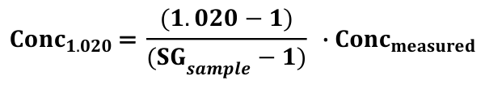

Technical Documents · TD2018CG/LH
Edition v1.0, 2018 (version 1.0) · effective 1 March 2018 · superseded
Retrieved on 25 November 2026 from https://www.wada-ama.org/sites/default/files/resources/files/td2018cglh_v1_en.pdf
Editions: v1.0, 2027 (current) · v1.0, 2021 · v1.0, 2019 · v1.0, 2018 · v1.0, 2017
p. 1
REPORTING & MANAGEMENT of URINARY HUMAN CHORIONIC GONADOTROPHIN (hCG) and LUTEINIZING HORMONE (LH) FINDINGS IN MALE ATHLETES
The purpose of this Technical Document is to ensure a harmonized approach in the reporting and management of elevated urinary concentrations of human Chorionic Gonadotrophin (hCG) and Luteinizing Hormone (LH).
The finding of the α/β heterodimer of hCG¹ in the urine of male Athletes at concentrations greater than the established Decision Limit (DL) may be an indicator of hCG Use for doping purposes. However, due to the association of elevated urinary hCG with pathology, such as testicular cancer, consideration must be given to possible causes, other than doping, which can produce elevated concentrations of heterodimeric hCG in urine Samples from male Athletes.
Elevated concentrations of total LH² in urine of male Athletes may also be an indication of the administration of this Prohibited Substance for doping purposes or of the Use of other Prohibited Substances that induce the release of endogenous LH, such as gonadotropin-releasing factors (i.e. gonadotropin-releasing hormone (GnRH) and its synthetic analogs) or estrogen blockers (anti-estrogens, aromatase inhibitors). On the other hand, suppressed urinary concentrations of LH in male Athletes may be an indication of, or corroborative finding for, the Use of androgens.
The objective of this Technical Document is to assist Laboratories report analytical findings for hCG and LH and aid Anti-Doping Organizations (ADOs) determine whether an Anti-Doping Rule Violation (ADRV) has occurred.
¹The α/β heterodimer of hCG includes the intact α/β heterodimer as well as the 'nicked' α/β heterodimer, in which the β-subunit is (usually) cleaved between residues 47 and 48. Although cleaved, the α and β-subunits in the nicked hCG are held together by non-covalent bonds. Immunoassays developed against 'intact hCG' typically measure these two forms of the α/β heterodimeric hCG molecule.
²Total LH includes the α/β LH heterodimer as well as the dissociated β-subunit and their degradation products.
p. 2
Document Number: TD2018CG/LH
Written by:
Version Number: 1.0
WADA Laboratory Expert Group Approved by: WADA Executive Committee
Approval Date:
15 November 2017
Effective Date: 1 March 2018
1.0 Introduction
- hCG and LH are prohibited in male Athletes only;
- hCG and LH are both heterodimeric proteins comprising two polypeptide chains, a common α-subunit and a unique β-subunit (hCGβ, LHβ). Only the α/β heterodimer has biological activity, which is determined by the hormone-specific β-subunit;
- Both hCG and LH occur in urine in different molecular forms, including the intact and nicked α/β heterodimers as well as the dissociated α- and β-subunits and their degradation products (e.g. the β-core fragments, nicked products, etc.);
- In men, hCG and LH stimulate production of testosterone by Leydig cells by binding to and activating CG/LH receptors;
- The heterodimeric hCG is either undetectable or found at very low levels (usually below 2 IU/L) in urine from healthy, non-doping males. However, elevated levels of heterodimeric hCG, free hCGβ, hCGβ-core fragment are produced by certain malignant tumors, especially in cases of testicular cancer. Heterodimeric hCG may also be produced by extra-testicular germ cell tumors. In addition, hCGβ may be produced by various non-trophoblastic cancers;
- Endogenous LH is normally detectable in urine from healthy men. LH has a shorter half-time in circulation than hCG. Circulating LH is subject to negative feedback by the production of endogenous testosterone or the administration of androgens.
2.0 Pre-analytical Procedure
- Before aliquoting for analysis, the urine Sample should be homogenized in the Sample bottle;
- Aliquots taken for analysis should be analyzed immediately. However, if necessary, Aliquots may be stored refrigerated for up to seven (7) days until analysis. Aliquots should not be frozen;
- If stored refrigerated, Aliquots should be re-suspended after removal from storage (e.g. by pipetting, vortexing or shaking). Aliquots should be allowed to reach the room temperature before being loaded into the instrument for analysis;
- In case of a Presumptive Adverse Analytical Finding, "A" Samples stored at -20 °C should be subjected to the Confirmation Procedure as soon as possible;
p. 3
- "B" Samples associated with an Adverse Analytical Finding found in the "A" Sample should be subjected to the Confirmation Procedure or transferred to deep freezing storage (-70 °C or less) as soon as possible until analysis.
3.0 Assay Requirements
3.1 hCG Assays
- For the measurement of hCG in urine, Laboratories shall apply assays which are specific for the α/β heterodimer of hCG1, 3 ;
- Application of assays for total hCG, i.e. those assays that measure other molecular forms (e.g. free β subunits or degradation fragments) in addition to the α/β heterodimer of hCG are not recommended. However, a Laboratory may consider measuring total hCG only as an initial pre-screening procedure for practical reasons (e.g. the lack of an automated assay for heterodimeric hCG);
- Parameters of α/β heterodimeric hCG quantitative assay performance shall be validated by the Laboratory.
The acceptance values for the following parameters of α/β heterodimeric hCG assay performance are specified in the table below:
³Men with "familial hCG", an apparently physiological and non-pathological anomaly of hCG secretion, have consistently elevated concentrations of hCGβ in serum and urine. This may cause a positive finding if an assay for "total" hCG is used. Therefore, such assays are not recommended to be used for Doping Control purposes.
p. 4
| Validation parameter. | Acceptance Criterion.Immunoassays | Acceptance Criterion.LC-MS/MS |
|---|---|---|
| sr (intra-assay Relative Standard Deviation, RSD %) | ≤ 10 % (at 5.0 IU/L) | ≤ 10 % (at 2.0 IU/L) |
| sw (inter-assay RSD %) | ≤ 15 % (at 5.0 IU/L) | ≤ 15 % (at 2.0 IU/L) |
| LOQ⁴ (IU/L) | ≤ 3.0 IU/L | ≤ 0.5 IU/L |
| uc_Max (%) | 20 % (at 5.0 IU/L) | 20 % (at 2.0 IU/L) |
3.2 LH Assays
- For the estimation of LH in urine, Laboratories shall apply assays for total LH, which are capable of measuring the total content of LH immunoreactivity.
4.0 Analytical Testing Strategy
4.1 Analytical Testing for hCG
4.1.1 Initial Testing Procedure
- Laboratories shall apply an assay validated to be as fit-for-purpose to detect specifically the α/β heterodimer of hCG (immunoassay or chromatographic-mass spectrometric assay[1]);
- If a total hCG immunoassay is applied as a pre-screening method and produces a suspicious result (greater than 5.0 IU/L), the Sample shall be subjected to an Initial Testing Procedure using an assay specific for heterodimeric hCG;
- The Laboratory shall use at least one quality control (QC) sample at levels close to 5 IU/L (immunoassays) or 2 IU/L (chromatographic-mass
⁴LOQ is defined as the lowest hCG concentration in urine meeting the specified criteria for uc (≤ 20 %).
p. 5
spectrometric assays)⁵ . The consistency of the hCG measurements of the QC shall be monitored through the use of QC-charts.
4.1.2 Confirmation Procedure
- Laboratories shall apply an assay validated to be as fit-for-purpose to detect specifically the α/β heterodimer of hCG (immunoassay or chromatographic-mass spectrometric assay[1]);
- If Laboratories utilize immunoassays for both the Initial Testing Procedure and the Confirmation Procedure, then the confirmation method shall be different from the immunoassay applied for the Initial Testing Procedure 6 . If a chromatographic-mass spectrometric method is utilized, then it may be combined with an immunoassay or used for both the Initial Testing Procedure and the Confirmation Procedure;
- The Laboratory shall use a negative (concentration less than the corresponding DL) and a positive (6 - 15 IU/L) urine QC sample⁵ . The consistency of the hCG measurements of the QCP shall be monitored through the use of QC-charts;
- For Samples producing a Presumptive Adverse Analytical Finding for the α/β heterodimer of hCG, the "A" Sample Confirmation Procedure should be performed as soon as possible. Alternatively, the remainder of the "A" Sample and the "B" Sample should be deep frozen (at -70 °C or less) immediately until analysis;
- For both "A" and "B" Confirmation Procedures, three (3) Sample Aliquots shall be measured, except when there is limited Sample volume, in which case a lower maximum number of replicates may be used.
⁵It is recommended that the QC samples be prepared in the matrix of analysis (urine), aliquoted and stored deep frozen (-70 °C or less) until use.
⁶Laboratories that do not have the analytical capacity to perform the Confirmation Procedure with a second assay specific for the α/β heterodimer of hCG shall have, upon consultation with the responsible Testing Authority, the Sample shipped to and analyzed by another Laboratory that has such analytical capacity. For further guidance, refer to the WADA Guidelines on Conducting and Reporting Subcontracted Analysis and Further Analysis for Doping Control.
p. 6
4.2 Analytical Testing for LH
- Laboratories should determine the concentrations of total LH² in urine during the Initial Testing Procedure by applying an assay capable of detecting the α/β heterodimer as well as the free β-chain and the β-core fragment (e.g. Siemens Immulite, Delfia);
- The Laboratory shall use at least one QC sample with total LH concentration between 5 - 50 IU/L⁵ . The consistency of the total LH measurements of the QC shall be monitored through the use of QC-charts;
- If the Initial Testing Procedure produces a Presumptive Adverse Analytical Finding for LH, the Laboratory shall test the Sample for the presence of gonadotropin-releasing factors (e.g. buserelin, gonadorelin, leuprorelin), anti-estrogenic substances and aromatase inhibitors⁷ .
5.0 Interpretation and Reporting of Results
5.1 hCG results
- The Laboratory shall report an Adverse Analytical Finding for hCG if the Confirmation Procedure confirms the presence of the hCG-α/β heterodimer at concentrations greater than the DL of 5.0 IU/L (immunoassays) or 2.0 IU/L (chromatographic-mass spectrometric assays). For urine Samples with values of specific gravity (SG) greater than 1.020, the DL shall be adjusted according to the TD DL [2]⁸ ;
- When reporting an Adverse Analytical Finding for hCG, the Laboratory Test Report shall include the mean concentration of the hCG-α/β heterodimer (expressed in international units per litre (IU/L) to 1 decimal place) of the
⁷Analysis for anti-estrogenic substances and aromatase inhibitors shall be part of the Laboratory's standard Analytical Testing menu. Analysis for gonadotropin-releasing factors may not be part of the Laboratory's routine Analytical Testing menu; however, Laboratories shall have analytical capacity to apply this method as a Confirmation Procedure for elevated LH findings.
⁸For urine Samples with values of SG higher than 1.020, the DL for hCG shall be adjusted according to the formula:
DDDDaaaaaa = (SSSSssssssssssss -11) (11.000000-11) · DL where DL = 5.0 IU/L for immunoassays and 2.0 IU/L for LC-MS/MS
The DLadj shall be expressed truncated to the same number of decimal places as the DL without rounding up (e.g. a DLadj of 5.326 shall be expressed as 5.3).
p. 7
replicate determinations performed during the Confirmatory Procedure as well as the relative uc (%) at values close to the DL as determined by the Laboratory during method validation;
- In case of an Adverse Analytical Finding for hCG, a comment shall be added to the Test Report recommending the ADO to advise the Athlete to undergo clinical investigations to exclude any pathological cause for the elevated urinary hCG (see Appendix 1);
- In cases when a pre-screening total hCG assay produces a suspicious result not corroborated by an elevated concentration (greater than the applicable DL) for heterodimeric hCG, the Laboratory shall report the finding as "No Prohibited Substance(s) or Metabolite(s) or Marker(s) of a Prohibited Method(s) were detected". However, the Laboratory shall make a comment on the Test Report recommending the ADO to advise the Athlete to undergo clinical investigations to exclude any pathological cause for the elevated total urinary hCG (see Appendix 1).
5.2 LH results
- For urine Samples with values of SG greater than 1.020, LH concentrations shall be adjusted to SG = 1.020⁹ ;
- The Laboratory shall report the measured concentration of total LH when the Initial Testing Procedure produces a Presumptive Adverse Analytical Finding, i.e. if the total LH concentration (after adjustment if urine SG is greater than 1.020) is greater than 60 IU/L when using the Immulite assay or greater than 40 IU/L when applying the Delfia assay;
- In cases when LH is not detectable in the Sample, the Laboratory shall report the finding as "the concentration of LH was less than the limit of detection (LOD)" and specify the applicable LOD;
- When there is a Presumptive Adverse Analytical Finding for LH, and tests are performed to detect the presence of gonadotropin-releasing factors, anti-estrogenic substances and aromatase inhibitors, the Laboratory shall report an
⁹For urine Samples with values of SG greater than 1.020, the LH concentration in the Sample shall be adjusted according to the formula:

p. 8
Adverse Analytical Finding if any one of these Prohibited Substances is confirmed in the Sample (in accordance with the TD IDCR [3]). In addition, the Laboratory shall report the estimated concentrations of LH;
- When there is a Presumptive Adverse Analytical Finding for LH, and tests performed to detect the presence of gonadotropin-releasing factors, anti-estrogenic substances and aromatase inhibitors produce negative results, the Laboratory shall report the finding as an Atypical Finding for LH.
6.0 Results Management
6.1 hCG findings
- When a Sample is reported as an Adverse Analytical Finding for hCG, the ADO should alert the Athlete and advise that clinical investigations be performed within a reasonable time frame to exclude pathological causes of the elevated urinary hCG concentrations (see Appendix 1). No provisional suspension shall be imposed on the Athlete during the course of the clinical investigations. The ADO should advise WADA when clinical investigations are conducted on an Athlete¹⁰ ;
- It is recommended that the ADO conducts at least one (1) follow-up no-notice test within a reasonable time frame (e.g. within 2 weeks) following the initial finding. If possible, the follow-up Sample should be analyzed at the same Laboratory and using the same assays that produced the initial Adverse Analytical Finding. If a different Laboratory is to be used, the same confirmatory assay for hCG shall be applied;
- If no clinical evidence is provided or the clinical investigations determine that there is no pathological condition associated with the elevated hCG concentrations, the results management process is followed as in the case for Use of other Prohibited Substance(s) or Prohibited Method(s). The results of the
¹⁰An Adverse Analytical Finding for the α/β heterodimeric hCG does not exclude the possibility of a pathological cause. Most cases of testicular cancer are associated with elevated serum and urine concentrations of heterodimeric hCG, as well as the presence of free hCGβ and hCGβ-core fragment in urine. In such cases, it is a responsibility of the Athlete to provide medical information or clinical evidence demonstrating that the heterodimeric hCG finding is the result of a pathological condition.
p. 9
Document Number: TD2018CG/LH
Written by:
Version Number: 1.0
WADA Laboratory Expert Group Approved by: WADA Executive Committee
Approval Date:
15 November 2017
Effective Date: 1 March 2018 follow-up Sample should be considered when evaluating the initial Adverse Analytical Finding and the clinical information¹¹ ;
- If medical information is provided by the Athlete to support the claim that the result is due to a physiological or pathological condition, such information shall be taken in to account and should lead the ADO to stop the result management process of the case as an ADRV.
6.2 LH findings
- If the presence of gonadotropin-releasing factors, anti-estrogenic substances or aromatase inhibitors is reported as an Adverse Analytical Finding, the results management process is followed, as in the case for Use of any other Prohibited Substance(s) or Prohibited Method(s);
- If an Atypical Finding for LH is reported (elevated total LH concentration with negative results for gonadotropin-releasing factors, anti-estrogens and aromatase inhibitors), the ADO should conduct at least one (1) follow-up no-notice test on the Athlete within a reasonable time frame (e.g. within 2 weeks) following the initial finding, unless the ADO has longitudinal data for the Athlete that indicates a follow-up is not warranted;
- The follow-up Sample should be preferably analyzed at a Laboratory that applies the same assay for total LH as the one used on the first Sample;
- The ADO should consider the results of longitudinal tests for LH in parallel with the evaluation of the longitudinal "steroid profile" of the Athlete. This evaluation should be done in consultation with an Athlete Passport Management Unit (APMU).
¹¹For example, a negative result for the follow up Sample is more consistent with prior Use of hCG and the absence of a pathological condition.
p. 10
7.0 References
-
Woldemariam GA and AW Butch. Immunoextraction-Tandem Mass Spectrometry Method for Measuring Intact Human Chorionic Gonadotropin, Free β-Subunit, and β-Subunit Core Fragment in Urine. Clin Chem 60: 1089-1097, 2014.
-
WADA Technical Document TD DL (current version). Decision Limits for the Confirmatory Quantification of Threshold Substances.
https://www.wada-ama.org/en/what-we-do/science-medical/laboratories
- WADA Technical Document TD IDCR (current version). Minimum Criteria for Chromatographic-Mass Spectrometric Confirmation of the Identity of Analytes for Doping Control Purposes.
https://www.wada-ama.org/en/what-we-do/science-medical/laboratories
Acknowledgements
The WADA Laboratory Expert Group wishes to thank the experts of the WADA hCG/LH Working Group for their contributions to the drafting of this Technical Document.
p. 11
Appendix 1. Medical Evaluation of a Case with Confirmed Positive hCG Test
An Adverse Analytical Finding for hCG in a male Athlete should lead to investigation of a non-doping cause before confirming an Anti-Doping Rule Violation for hCG doping. (Note: hCG is not prohibited in female Athletes).
Testing for hCG
hCG is a heterodimeric glycoprotein comprised of two subunits, α (hCGα) and β (hCGβ). hCG occurs in urine in different molecular forms, including the intact and nicked α/β heterodimers as well as the dissociated α- and β-subunits and their degradation products (e.g. the β-core fragments, nicked products, etc.).
Both hCG, its subunits and their fragments may be detected in urine by hCG immunoassays with wide specificity ("total hCG" assays). Anti-doping tests, however, aim to detect only the hCG-α/β heterodimer (i.e. by applying so-called "intact hCG" assays, which in addition to the intact α/β heterodimer may also detect the "nicked" α/β heterodimer). Among a variety of available commercial hCG immunoassays, only specific assays have been validated for this purpose.
The heterodimeric hCG is either undetectable or found at very low levels (usually below 2 IU/L) in urine from healthy males. However, heterodimeric hCG may be produced by testicular cancers or extra-testicular germ cell tumors. If such tumors can be excluded, the otherwise unexplained presence of elevated levels of heterodimeric hCG in serum or urine is evidence for the pharmacological administration of hCG.
A positive "intact hCG" test result in an athlete may be due to an undiagnosed testicular tumor containing trophoblastic elements that synthesize hCG. Rarely, ectopic hCG secretion can arise from extra-testicular germ cell tumors, typically located in the midline of the mediastinum, retro-peritoneum or pineal gland. These extra-testicular tumors have a significantly worse prognosis than testicular germ cell tumors.
Medical Evaluation
Following an AAF for an hCG test, the first step is to promptly exclude a pathological cause by a medical assessment. The importance of this assessment should be communicated to the Athlete who should subsequently be reviewed by a doctor, ideally a urologist or an endocrinologist.
The medical assessment of a potential pathological cause of a positive hCG test must include:
- History (including cryptorchidism, family history);
p. 12
-
Physical examination (including testes palpation, testis volume, gynecomastia);
-
Laboratory investigations - serum hCG (intact), alpha fetoprotein (AFP), LDH as tumor marker and serum LH, FSH, testosterone, SHBG (to detect hCG bioactivity);
-
Imaging
a. Ultrasound of testes (hypoechoic lesions, microlithiasis);
b. If serum hCG (intact) assay remains positive AND there is no palpably enlarged testis or presumptive tumor identified by ultrasound, imaging to exclude an extra-testicular germ cell tumor is indicated by CT scan (alternatively MRI or PET scan) of chest, abdomen and brain.
A palpably enlarged testis requires referral to an urologist or oncologist for further evaluation and treatment of a presumed testis tumor.
If serum hCG (intact) remains elevated and no testis or extra-testicular tumor is identified in the original investigation, the Athlete should have a clinical follow-up with the same serum hCG (intact) immunoassay, including repeat testis ultrasound (to examine for any new or changed hypoechoic testicular lesions) after 3 months. As some of these tumors may be slow growing, follow-up to exclude a testis tumor may need to be prolonged (up to 2 years).
Although the investigation for testicular tumors/cancers should be pursued without delay, further anti-doping Testing during the period of investigation is often required to clarify the situation.
Retrieved on 25 November 2026 from https://www.wada-ama.org/sites/default/files/resources/files/td2018cglh_v1_en.pdf